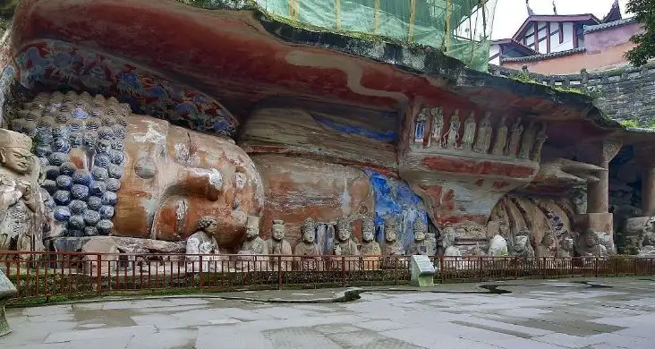
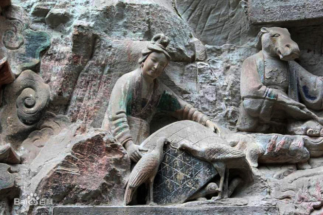
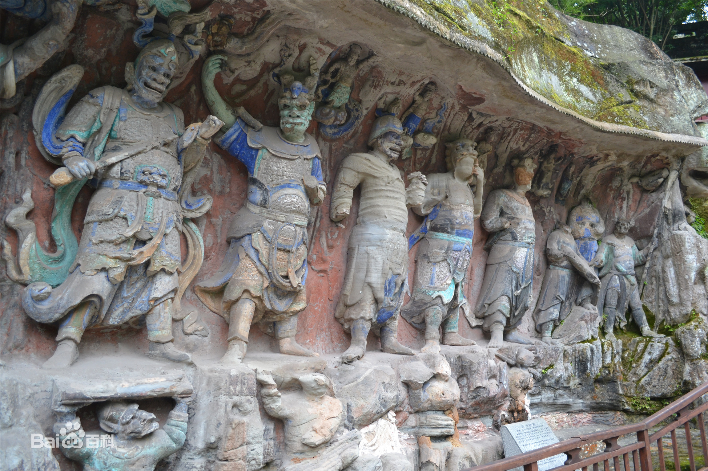

大足宝顶卧佛全长31米，头北脚南，背东面西，右侧而卧。两眼半开半闭，似睡非睡，安祥，平静，佛经里叫释迦涅盘圣迹图。
涅盘是佛教的最高境界，是修行圆满，从生老病死以及各种欲望忧虑的苦海中解脱出来，进入“不生不死”、尽善至美的理想境地，这也是众生皈依佛法后所追求的最高理想。
因此，这幅图画给人的感觉是肃穆宁静的气氛，会自然而然让人觉得有去除杂念、超脱凡尘、心明如镜的平静之美。
而且宝顶山这尊卧佛是半身像，其下半身隐入石岩之中。
这种意到笔不到的手法，有种于有限中产生无限联想的艺术效果。
故大足民间对宝顶山卧佛有“身在大足，手摸巴县，脚踏泸州”的说法，给人以无限想象的翅膀。
世界文化遗产大足石刻宝顶山石窟中“地狱变相”组雕中的一尊。俗称"养鸡女"。
展现的是一位农家少妇掀开鸡笼，两只鸡正在争啄一条蚯蚓的场面。雕像充满诗意般的乡村风情。
但就佛家的思维，养鸡的目的是“杀生”，最终会下地狱。
此像为"地狱变"相龛"刀船地狱"组雕之一，俗称"养鸡女"。展现的是一位农家少妇掀开鸡笼，两只鸡正在争啄一条蚯蚓的场面。
雕像充满诗意般的乡村风情。

大足石刻千手观音造像位于宝顶山石刻区大佛湾的南崖，开凿于南宋淳熙至淳佑（公元1174-1252）年间，为我国最大的集雕刻、彩绘、贴金于一体的摩崖石刻造像，是世界文化遗产大足石刻的重要代表作品。
千手观音宝顶石窟大佛湾第8号龛的千手观音覆盖于南岩东端“大悲阁”内，凿造于南宋，是其同类题材的登峰造极之作。
最引人注目的是，在观音的左右两侧和头顶上方，呈放射状似孔雀开屏般地浮雕着一支支似乎是难以数计的“金”手，且每只手掌心中有一只眼睛，每只手中持一种器物。其姿势或伸、或屈、或正、或侧，显得圆润多姿，金碧辉煌，给人以眼昏目炫之感。
十八罗汉是指佛教传说中十八位永住世间、护持正法的阿罗汉，由十六罗汉加二尊者而来。他们都是历史人物，均为释迦牟尼的弟子。十六罗汉主要流行于唐代，至唐末，开始出现十八罗汉；到宋代时，则盛行十八罗汉了。十八罗汉的出现，可能与中国文化中对十八的传统偏好有关。
石雕十八罗汉佛像是寺庙常见的雕像，石雕十八罗汉佛像大家已经很熟悉了，十八罗汉在电影电视剧上是非常常见的。石雕十八罗汉佛像分别是坐鹿罗汉、欢喜罗汉、举钵罗汉、托塔罗汉、静坐罗汉、过江罗汉、骑象罗汉、笑狮罗汉、探手罗汉、沉思罗汉、挖耳罗汉、布袋罗汉、芭蕉罗汉、长眉罗汉、看门罗汉、降龙罗汉、伏虎罗汉。
